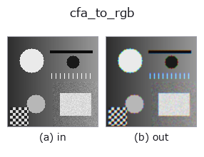

color op• データ種: image → color
• 呼び出し: fullseye.apply(img, "cfa_to_rgb", a=0.5, b=0.5) (2-D は 1 画像 + 2 スカラつまみ a,b∈[0,1] のモデル)
• HALCON 相当: cfa_to_rgb(意味・パラメータは HALCON リファレンスが参考になる)

*図は合成の入力 128×128 で実際に走らせた出力。左が入力、右が出力。点群は上から見た散布(明るさ = z)、1-D 列は折れ線、体積は z 方向の最大値投影、動画は中央フレーム、複素画像は振幅、絵にならない返り値は値そのもの。*
つまみ a を振る(0.1 / 0.5 / 0.9、もう一方は既定):
▸ cfa_to_rgb: knob a sweep (docs site)
*つまみ b は出力を変えない(実測: 0.1 / 0.5 / 0.9 で同一)。*
別の画像でも(合成シーン / 写真 / 硬貨。上段が入力、下段がその出力。つまみは既定):
▸ cfa_to_rgb: other inputs (docs site)
*4 列目はカラー (H,W,3) の入力。この op は色を跨がずに扱える(色チャネルを 3 本目の空間軸として畳み込まない)。*
Bayer 配列（CFA: Color Filter Array）から RGB 画像へのデモザイク処理。HALCON の
`cfa_to_rgb`（単板カラーフィルタアレイ画像を RGB 画像に変換する）に近似。
単一チャンネルのグレースケール画像を Bayer パターンの生データとみなし、
OpenCV の `cv2.cvtColor` でデモザイクして 3 チャンネル RGB に復元する。
image から color への橋渡し op（進化がカラー系統に入る唯一の入口）。
a は Bayer パターンの並び順を 4 通り（BG/GB/RG/GR の並び）から選ぶ
（`min(3, int(a * 4))` で 0〜3 に量子化）。b は未使用。
パターンが実際の入力と合わない場合、色ズレ・モアレが出る（本来の Bayer
配置が分からない合成画像に対してはどれも「それらしい」RGB化でしかない）。
• gallery2d_color_artistic ファミリ ガイド
• colorimetry — 測色と分光の知識 — 色は「分光 × 光源 × 観測者」でしか決まらない
• サンプルデータ カタログ(DL URL / ライセンス) — 2-D は skimage.data(BSD/public)+ 合成、3-D は実データ源(Stanford/PDS 等)の DL URL。
• 演算子の来歴・参考文献 — この op 族の元になった研究/手法の出典。
• アルゴリズムの正典(著者・年)と用途は上記ファミリ使い方ガイドに記載。
下のプログラムは実際に走ることを確かめてある(図と同じ入力)。Studio のヘルプではこのブロックがボタンになり、その場で読み込んで実行できる。
cfa_to_rgb 0.50 0.50
▸ Load this pipeline · Load & run
• gallery2d_color_artistic — py -3.11 examples/gallery2d_color_artistic.py
color を入力に取れる)identity · trans_from_rgb · trans_to_rgb · linear_trans_color · principal_comp · rgb1_to_gray · rgb3_to_gray · access_channel
color)trans_from_rgb · trans_to_rgb · linear_trans_color · principal_comp · rgb1_to_gray · rgb3_to_gray · access_channel
*Provenance: ops.py — 2D operator registry. この per-op ノートは tools/opdocs.py md が自動生成(手編集しない)。*
© 2026 Kazufumi Furuse — Fullseye operator documentation. Licensed under Apache-2.0.
{kind=link}
{kind=link}